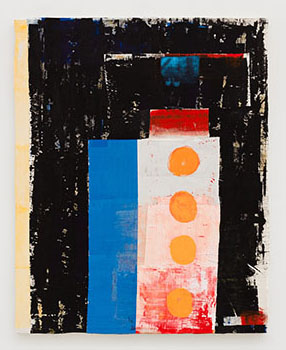

OPENING TONIGHT

Bad Fog
Bill Adams, Antoniadis and Stone, David Armacost,
Liz Craft,
Jennie Jieun Lee, Jesse Littlefield,
Dan McCarthy, Ross Simonini
Curated by Eddie Martinez
January 9 - February 15, 2014
Opening reception: Thursday, January 9, 6 - 8 pm
I would guess everyone has had his or her own Bad Fog. Bad Fog makes me think of alcohol, and OCD, depression, and OCD, food, drugs, alcohol, anger, and OCD.
Jesse and I met in ‘94 when I, along with my friends Dan and Dave, had to intervene before Jesse was eaten alive by an obese townie at a high school hardcore show in Peabody. We loved graffiti and worked together doing ‘newspapah’ inserts for the Salem News. All we did was avoid working—it was awesome. Eventually we went our own ways, each complete with our own Bad Fogs, but we have reunited... and it feels so good. Jesse’s Instagram moniker is Bad_Fog. It made sense to me as a title for this exhibition, particularly when he told me it was snippet from Neil Young's "Bad Fog of Loneliness."
I put this show together because the artists on display inspire me to step outside of the Bad Fog and to embrace a brighter stance. Through shining glazes and the fluid materiality of clay, Jennie Jieun Lee’s ceramic masks and Dan McCarthy’s figurative vases present playful yet explicit representations of human expression. Antoniadis and Stone’s paintings made from lighter flames on acrylic cultivate a sense of impulsiveness and obsessive creativity, while Liz Craft’s ceramic snakes stir up intrusive thoughts that slip around my brain. In Jesse Littlefield’s raw paintings and Ross Simonini’s Anxiety Napkins, spontaneous gestures harmoniously link together to invoke controlled chaos. David Armacost’s mystical narratives summon embellished alternatives to the banalities of everyday life, and Bill Adams’ gestural signs foster a meditative exploration of the formal elements of painting and sculpture.
-Eddie Martinez
Image: Jesse Littlefield, Sick Puppy, 2013, acrylic on muslin, 60 x 48 inches
Martos Gallery
540 West 29th Street
New York, NY
10001
212-560-0670